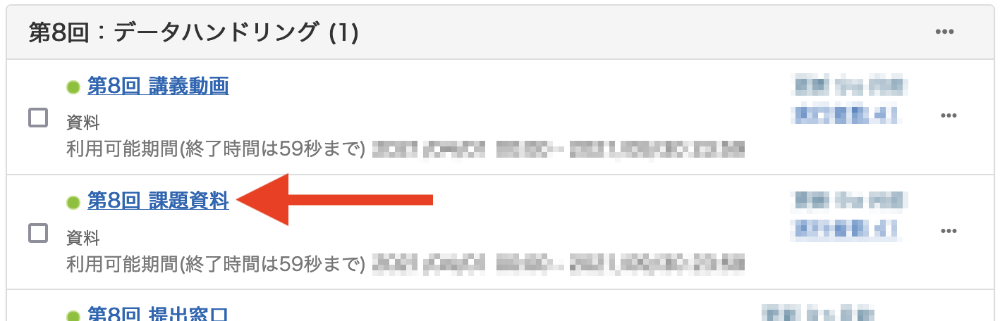
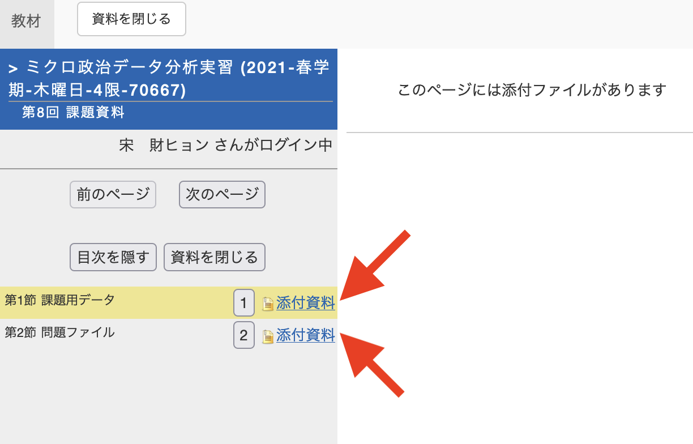
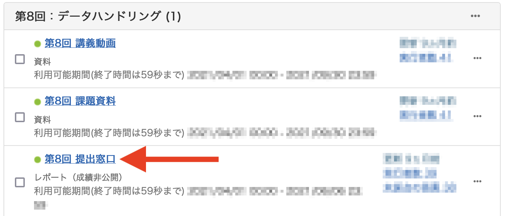
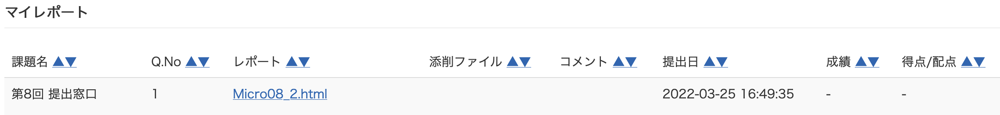

課題の取り組み方
課題の取り組み方が分からない?
必ず宋と相談すること。
Step1: 課題ファイル一式の入手
手順1: LMSの授業ページから「第XX回 課題資料」を選択する。
- 以下の画面は2021年度のページである。
- タイトルは「第XX回 課題資料」でなく「第XX回 課題用ファイル」など変更される可能性もある。
手順2: 通常、課題ファイルは2つであるが、1つのみ、または3つ以上の場合もある。それぞれの資料の「添付資料」クリックする。

手順3: 新しいウィンドウが表示される。ここでファイル名をクリックするとファイルがダウンロードされる。この作業を全ファイルに対して行うこと。

Step2: 課題ファイルのアップロード
手順1: NIIオンライン分析システムへアクセスし、RStudioを起動する。
手順2: 課題用のプロジェクトを作成する。プロジェクト名は任意だが、Homework_XXやHW_XXなど、分かりやすい名前を付けよう。
手順3: ダウンロードしたファイルにデータ（.csvなど）がある場合、プロジェクト・フォルダー内にDataというフォルダーを作成する。
手順4: ダウンロードしたファイルをアップロードする。課題用ファイル（.Rmdファイル）はプロジェクト・フォルダー直に、課題用データ（.csv、.xlsxなど）は手順3で作成したDataにアップロードする。
Step3: 頑張る
一部の課題を除き、本講義の課題は本サポートページの「課題」メニューに掲載されている画面と同じ結果が得られるようにコードを書くことである。
学籍番号と名前を忘れずに!
課題用ファイル（.Rmd）の2行目には「情20-0012 関大太郎」と名前が記入されている。課題に取り組む前にまず学籍番号と名前を修正しよう。毎年、関大太郎と関大花子さんから提出された課題が散見されるが、この場合、課題未提出とみなす。むろん、自分の名前が関大太郎/関大花子なら学籍番号のみ修正しても良い。
一部の課題を除き、履修者がやることは「学籍番号と氏名の修正」と「チャンク（chunk）内にコードを入力すること」、そして最後に「Knit」することだけである。チャンク内には# ここにコードと既に何かが書いてあるが、この# ここにコードの行は消してからコードを書くこと。あっても減点にはならない（印象は悪くなるかも知れない）。
Step4: 出力物のダウンロード
本講義の課題は一部を除き、成果として.htmlファイルを提出する。Knit後のHTMLファイルは元のRmdファイル名.htmlである。こちらのファイルをダウンロードしよう。.Rmdも一緒にダウンロードして良いが、指定された形式のファイルを提出すること。.htmlファイルを提出しなければならないのに、.Rmdファイルを提出した場合は未提出とみなす。
右クリックしてダウンロードは厳禁!!!
出力物のダウンロード方法はファイル管理を参考すること。JupyterHubのホーム画面でファイルを右クリックして保存することは絶対にしないこと。開いてみれば分かるが、なんの情報もない（ほぼ）空っぽのファイルがダウンロードされる。提出期限が過ぎてから「知りませんでした！ごめんなさい！てへっ」と言われても、宋は「そうか、残念！てへっ」としか言わないので、ダウンロードしたファイルは必ず一回自分で開いてみよう。
Step5: 提出
手順1: LMSの授業ページから「第XX回 課題提出窓口」をクリックする。

手順2: 指定された形式のファイルを添付し、「レポート提出」クリックする。
- 提出されたら「202X-XX-XX XX:XX:XX にファイル xxxxxxxx が提出済みです。」と表示される。ここまでできたら終了ボタンをクリックする。

課題がちゃんと提出されているか不安です…
自分が提出した課題はLMSの「マイレポート」から確認できる。

以下のように自分が提出した課題のリストが表示される。提出物のダウンロードもできるため、ファイルが問題なくアップロードされているかも確認できる。
